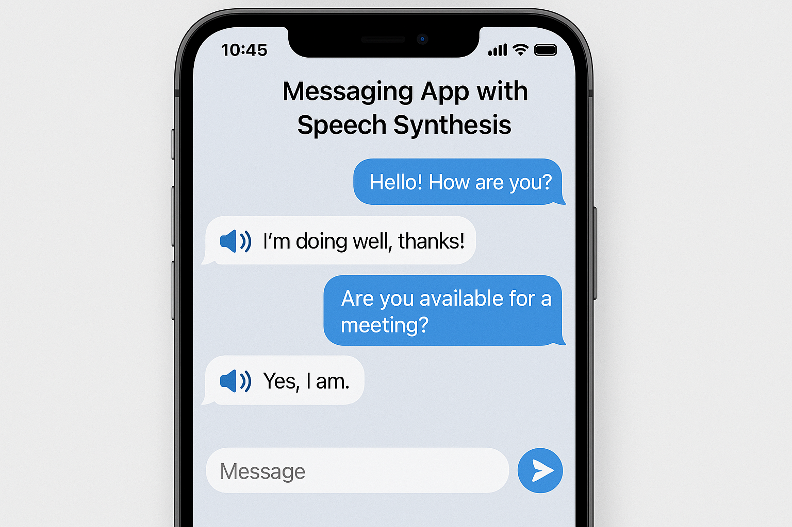

Messaging apps like Whatsapp, Microsoft Teams, Signal, WeChat, etc. are widely used for communication. Although they offer high-performance messaging services, very few of them have the feature to synthesize the user's messages into speech. Some people feel more comfortable listening to speech rather than reading text messages. Sending voice messages is possible but sometimes it defeats the purpose of messaging apps. If a user wants to skip reading a part of the message, it is not possible with voice messages. However, transcribing speech can allow the receiver to access both text and voice messages.
The EMOVDB database is the freely available German emotional database. The database is created by the Institute of Communication Science, Technical University, Berlin, Germany. Ten professional speakers (five males and five females) participated in data recording. The database contains a total of 535 utterances. The EMODB database comprises seven emotions: 1) anger; 2) boredom; 3) anxiety; 4) happiness; 5) sadness; 6) disgust; and 7) neutral. The data was recorded at a 48-kHz sampling rate and then down-sampled to 16-kHz.
It is a library for advanced Text-to-Speech generation. It’s built on the latest research, and was designed to achieve the best trade-off among ease-of-training, speed and quality. TTS comes with pretrained models, tools for measuring dataset quality and is already used in 20+ languages for products and research projects. But for our project we have trained our model with our data as well to create a custom TTS AI.
LJSpeech is an open source audio dataset containing 13100 clear high quality audio files. It was recorded by Linda Johnson. Each audio file is a short clip of a single speaker from 7 different non-fiction books. It is the default audio dataset used for training coqui TTS models. We have used the lj speech dataset to train our model.
Formerly called API.AI, DialogFlow is Google’s chat-bot development Framework. It uses Natural Language Processing and machine learning to generate responses to any conversation. It can be used for creating professional business chatbots and can be integrated in a large number of different platforms including LINE, Telegram , Google Chat, Twitter, Facebook and other popular social media platforms.
Ngrok is a tool that allows you to securely expose a web server running on your local machine to the internet. It creates a secure tunnel from a public endpoint on the internet to a local endpoint on your machine, so that anyone can access your web server from anywhere in the world. This can be very useful for testing webhooks or APIs that require an external endpoint, or for giving demos of your web app without having to deploy it to a public server.
Overall, we have learned that training a high-quality text-to-speech model requires a large amount of high-quality audio data and powerful computing resources, and we will continue to explore ways to improve our models in the future.